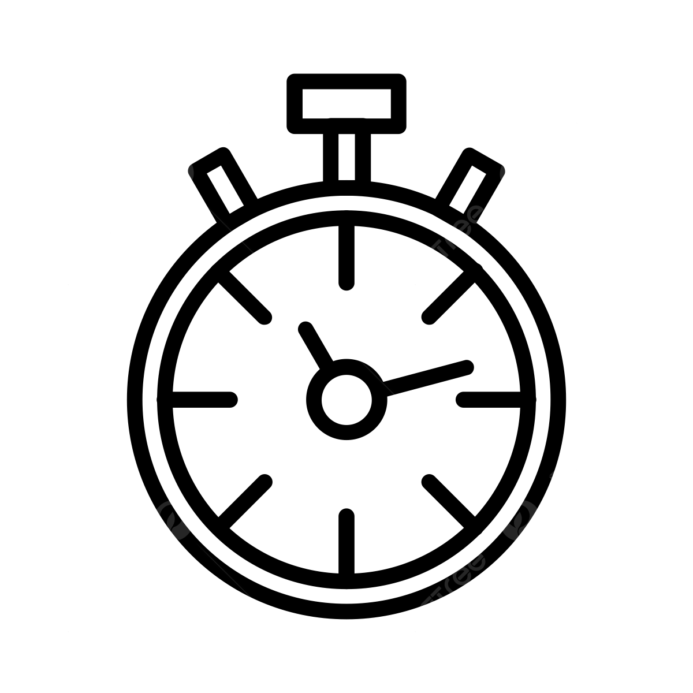

Instrucciones para el Laboratorio
En esta fase del proyecto, vuestro grupo se convertirá en un equipo de investigación.
El objetivo es recopilar datos rigurosos para realizar un análisis comparativo entre los métodos de los científicos del pasado y la potencia de la tecnología actual.
Para que vuestro Manual de Supervivencia Científica sea útil, debéis seguir con precisión las hojas de ruta de cada estación.
Estación Analógica: Los Métodos Tradicionales
¡Es hora de viajar al pasado! En esta estación vuestra misión es medir la gravedad como lo hacían los grandes científicos de la historia antes de la era digital: usando vuestros sentidos y herramientas manuales.
Procedimientos de la Estación Analógica:
Experimento 1: Caída Libre Analógica. Mediréis el tiempo que tarda una pesa en caer desde alturas comprendidas entre 1,50 m y 2,50 m.
Experimento 2: Péndulo Simple Analógico. Calcularéis el periodo de oscilación (T) midiendo el tiempo de 10 oscilaciones completas. Recordad que el ángulo de lanzamiento debe ser inferior a 15º.
Pulsa sobre los iconos para dirigirte a la guía de cada experimento.
Estación Analógica |
Caída Libre |
|
Péndulo Simple |
Iconos de Freepek
Descarga Offline:
Estación Digital: El Laboratorio en tu Bolsillo (Phyphox)
¡Ahora la tecnología toma el mando! En esta estación, vuestro smartphone se convertirá en un instrumento científico de alta precisión gracias a la App Phyphox. Vamos a eliminar la incertidumbre del cronómetro manual usando los sensores acústicos y de rotación del móvil.
Procedimientos de la Estación Digital:
Experimento 3: Cronómetro Acústico. Usaréis el sonido del estallido de un globo para activar el cronómetro y el impacto metálico para detenerlo. ¡Ajustad bien el umbral (Threshold) para evitar ruidos de fondo!
Experimento 4: Péndulo con Smartphone. El móvil será la propia masa del péndulo. Deberéis construir una 'cama' de cartón segura para que el dispositivo registre la velocidad angular en tiempo real mientras oscila.
Pulsa sobre los iconos para dirigirte a la guía de cada experimento.
Estación digital
|
 |
Caída Libre |
 |
Péndulo Simple |

Iconos de Freepek
Descargas Offline:
Reglas de Oro del Investigador
Recordad vuestro protocolo de actuación:
- Rigor Científico: Debéis realizar 5 repeticiones de cada ensayo, con las variaciones que se indican en cada guía, para minimizar el error.
- Evidencia Digital: Grabad clips de vídeo de los aciertos y, sobre todo, de los errores experimentales; vuestro Genially final deberá explicar por qué fallaron. Tomad fotos/capturas de pantalla de los resultados obtenidos con el cronómetro y con el smartphone en todos los experimentos.
- Compromiso Ético: Respetad la privacidad de vuestros compañeros. No grabéis rostros sin consentimiento expreso.